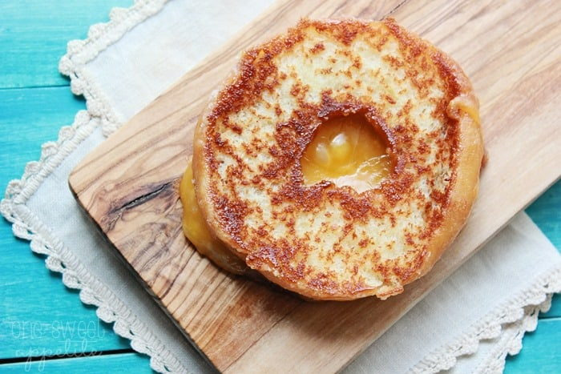

Description
This Tom and Chee inspired recipe makes the most amazing sweet and savory grilled cheese donut! Cheddar cheese is slowly melted between a buttered glazed donut for a fun sandwich recipe.
Ingredients
- Glazed Doughnut
- Cheddar Cheese
- Butter
Steps
- Cut the doughnut in half.
- Spread butter on the non-glazed side of the doughnut.
- Put a slice of cheese between the doughnut halves, and cook in a skillet on medium-high heat until both sides are cooked to your liking.